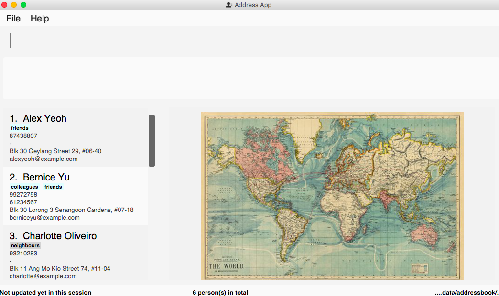

By: Team W11-B1 Since: Sep 2107 Licence: MIT
- 1. Welcome to Contact Plus
- 2. Quick Start
- 3. Features
- 3.1. Viewing help :
help - 3.2. Adding a person:
add - 3.3. Listing all persons :
list - 3.4. Editing a person :
edit - 3.5. Locating persons by name:
find - 3.6. Deleting a single person :
delete - 3.7. Selecting a person :
select - 3.8. Listing entered commands :
history - 3.9. Undoing previous command :
undo - 3.10. Redoing the previously undone command :
redo - 3.11. Clearing all entries :
clear - 3.12. Exiting the program :
exit - 3.13. Deleting a tag :
deletetag[Since v1.0] - 3.14. Locating persons by tag:
search+ TAG_NAME [Since v1.1] - 3.15. Add second phone number for a person [Since v1.1]
- 3.16. Locating persons by multiple criteria:
multifilter[Since v1.1] - 3.17. Autocomplete command names [Since v1.2]
- 3.18. AutoCorrect command names [Since v1.2]
- 3.19. Deleting multiple persons :
delete index/another index/…[Since v1.2] - 3.20. Viewing Weather Forecast [Since v1.3]
- 3.21. Extended autocomplete for commands [Since v1.3]
- 3.22. Keyboard shortcuts [Since v1.3]
- 3.23. Add tasks [Since v1.3]
- 3.24. Sound effect for system events [Since v1.3]
- 3.25. Tag use emoji :
tag emoji[Coming in V2.0] - 3.26. Add non-English words as input [Coming in V2.0]
- 3.27. Add push notification [Coming in V2.0]
- 3.28. Saving the data
- 3.1. Viewing help :
- 4. FAQ
- 5. Command Summary
1. Welcome to Contact Plus
Contact Plus is a contact-managing service through command line. We strive to provide the very comprehensive services for busy students on the campus so that they can manage their contacts efficiently. For example, the auto-correction feature allows our busy friend - David, a university student, to type fast on the keyboard without worrying spelling mistakes.
This guide will help you get familiar with the features of Contact Plus application.
2. Quick Start
-
Ensure you have Java version
1.8.0_60or later installed in your Computer.Having any Java 8 version is not enough.
This app will not work with earlier versions of Java 8. -
Download the latest
addressbook.jarhere. -
Copy the file to the folder you want to use as the home folder for your Address Book.
-
Double-click the file to start the app. The GUI should appear in a few seconds.
 -
Type the command in the command box and press Enter to execute it.
e.g. typinghelpand pressing Enter will open the help window. -
Some example commands you can try:
-
list: lists all contacts -
addn/John Doe p/98765432 e/johnd@example.com a/John street, block 123, #01-01: adds a contact namedJohn Doeto the Address Book. -
delete3: deletes the 3rd contact shown in the current list -
exit: exits the app
-
-
Refer to the Features section below for details of each command.
3. Features
Command Format
-
Words in
UPPER_CASEare the parameters to be supplied by the user e.g. inadd n/NAME,NAMEis a parameter which can be used asadd n/John Doe. -
Items in square brackets are optional e.g
n/NAME [t/TAG]can be used asn/John Doe t/friendor asn/John Doe. -
Items with
… after them can be used multiple times including zero times e.g.[t/TAG]…can be used ast/friend,t/friend t/familyetc. -
Parameters can be in any order e.g. if the command specifies
n/NAME p/PHONE_NUMBER,p/PHONE_NUMBER n/NAMEis also acceptable.
3.1. Viewing help : help
Format: help
Keyboard shortcut: F1
3.2. Adding a person: add
Adds a person to the address book
Format: add n/NAME p/PHONE_NUMBER p2/PHONE_NUMBER or '-' e/EMAIL a/ADDRESS [t/TAG]…
|
A person can have any number of tags (including 0) A person can add the symbol '-' if a second phone number is not required for the contact |
Examples:
-
add n/John Doe p/98765432 p2/61234567 or '-' e/johnd@example.com a/John street, block 123, #01-01 -
add n/Betsy Crowe t/friend e/betsycrowe@example.com a/Newgate Prison p/1234567 t/criminal
3.3. Listing all persons : list
Shows a list of all persons in the address book.
Format: list
3.4. Editing a person : edit
Edits an existing person in the address book.
Format: edit INDEX [n/NAME] [p/PHONE] [p2/PHONE] [e/EMAIL] [a/ADDRESS] [t/TAG]…
Examples:
-
edit 1 p/91234567 e/johndoe@example.com
Edits the phone number and email address of the 1st person to be91234567andjohndoe@example.comrespectively. -
edit 2 n/Betsy Crower t/
Edits the name of the 2nd person to beBetsy Crowerand clears all existing tags.
3.5. Locating persons by name: find
Finds persons whose names contain any of the given keywords.
Format: find KEYWORD [MORE_KEYWORDS]
Examples:
-
find John
ReturnsjohnandJohn Doe -
find Betsy Tim John
Returns any person having namesBetsy,Tim, orJohn
3.6. Deleting a single person : delete
Deletes the specified person from the address book.
Format: delete INDEX
Examples:
-
list
delete 2
Deletes the 2nd person in the address book. -
find Betsy
delete 1
Deletes the 1st person in the results of thefindcommand.
3.7. Selecting a person : select
Selects the person identified by the index number used in the last person listing.
Format: select INDEX
Examples:
-
list
select 2
Selects the 2nd person in the address book. -
find Betsy
select 1
Selects the 1st person in the results of thefindcommand.
3.8. Listing entered commands : history
Lists all the commands that you have entered in reverse chronological order.
Format: history
|
Pressing the ↑ and ↓ arrows will display the previous and next input respectively in the command box. |
3.9. Undoing previous command : undo
Restores the address book to the state before the previous undoable command was executed.
Format: undo
|
Undoable commands: those commands that modify the address book’s content ( |
Examples:
-
delete 1
list
undo(reverses thedelete 1command) -
select 1
list
undo
Theundocommand fails as there are no undoable commands executed previously. -
delete 1
clear
undo(reverses theclearcommand)
undo(reverses thedelete 1command)
3.10. Redoing the previously undone command : redo
Reverses the most recent undo command.
Format: redo
Examples:
-
delete 1
undo(reverses thedelete 1command)
redo(reapplies thedelete 1command) -
delete 1
redo
Theredocommand fails as there are noundocommands executed previously. -
delete 1
clear
undo(reverses theclearcommand)
undo(reverses thedelete 1command)
redo(reapplies thedelete 1command)
redo(reapplies theclearcommand)
3.11. Clearing all entries : clear
Clears all entries from the address book.
Format: clear
3.12. Exiting the program : exit
Exits the program.
Format: exit
3.13. Deleting a tag : deletetag [Since v1.0]
Deletes the specified tag from the address book.
Format: delete tag_name
3.13.2. Examples
Your input |
Result |
|
Deletes the tag No action is performed if there is no tag named |
3.13.3. How to use
-
Type
deletetagfollowed by the name of the tag that you wish to delete. For example, we use the name "friends".
-
After hitting ENTER, the tag with the specified name is deleted from all contacts in the address book.

3.14. Locating persons by tag: search + TAG_NAME [Since v1.1]
Searches persons whose tag names contain any of the given keywords.
Format: search KEYWORD [MORE_KEYWORDS]
Examples:
* search friends
Returns John Alice
* search fri
Returns Unknown tag
3.15. Add second phone number for a person [Since v1.1]
Add the second phone number for a person by using prefix "p2/"
Format: COMMAND_WORD PARAMETERS p2/PHONE_NUMBER OTHER_PARAMETERS
Examples:
* add n/John Doe p/98765432 p2/73624789 e/johnd@example.com a/John street, block 123, #01-01
* edit 1 p/91234567 p2/73624789 e/johndoe@example.com
3.16. Locating persons by multiple criteria: multifilter [Since v1.1]
Finds persons whose names, phone no., emails and addresses,
match a set of specified criteria.
Format: multifilter [n/NAME] [p/PHONE NO.] [e/EMAIL] [a/ADDRESS]
3.16.2. Examples
Your input |
Result |
|
Returns contacts whose address contain |
|
Returns all contacts |
|
Returns contacts who match ALL of the following criteria: 1. Name contains An example of a matching contact for this command would be |
3.16.3. How to use
-
Enter
multifilterinto the command bar followed by one or more format fields. See command format here.
-
Press the ENTER key. The results are displayed based on the criteria that you have entered.

| If no filters are used, all contacts will be displayed. |
3.17. Autocomplete command names [Since v1.2]
Finds commands whose names start with the user-entered text.
Names of matching commands would be suggested to the user or automatically entered
depending on how many matching commands were found.
Format: [Prefix]
3.17.2. Examples
Your input |
Result |
|
Expands to |
|
Nothing is returned by address book. |
|
Returns various command suggestions in the result pane. e.g. |
3.17.3. How to use
Enter some text into the command bar (as shown below) and press TAB. Commands, whose names start with the entered text, will be suggested. See description for more details on how autocomplete works.

3.18. AutoCorrect command names [Since v1.2]
Finds command whose names start with the command entered from the user.
Application will notify the user that the command entered is corrected and perform the corrected commmand.
Format: [misspelt command]
| Auto-correct is not designed for alias. |
Examples:
-
deleetwill match todelete. -
delwill not match to any command, application will display "Unkown command" -
dwill be matched todeletestill as it is an alias.
3.19. Deleting multiple persons : delete index/another index/… [Since v1.2]
Deletes multiple persons from the address book.
Format: delete INDEX/INDEX
Example:
1) Enter list into the Command Box

2) delete 2/3 deletes the 2nd and 3rd person from the address book.

3) Display the confirmation for deletion

3.20. Viewing Weather Forecast [Since v1.3]
Viewing weather forecast on Yahoo Weather page. Accessible from File dropdown list, Weather Forecast menu item.

The expected page would be as follows:

3.21. Extended autocomplete for commands [Since v1.3]
Autofills the full syntax of the command whose name matches the user-entered text exactly. Format: [COMMAND_WORD]
3.21.2. Examples
Your input |
Result |
|
expands to |
|
exapnds to |
3.21.3. How to use
-
Enter the name of the command that you wish to use. For example,
add.
-
Press the Ctrl key. The command’s format is automatically filled in the command bar for you. The help text, which explains how to use the command, is also displayed in the result pane.

-
Add any additional information (based on the help text) should be typed into the command bar before pressing ENTER.

-
The result of the command is displayed in the result pane.

3.22. Keyboard shortcuts [Since v1.3]
Keyboard shortcuts enables users to quickly get the command words without memorization. Format: CONTROL + COMMAND_WORD_ALIAS
3.23. Add tasks [Since v1.3]
Add personal tasks into the address book.
Format: task d/DESCRIPTION pr/PRIORITY(0/1/2) on DUE DATE(dd/MM/yyyy)
Examples:
-
task d/CS2103 Assignment priority/2 on/26/10/2017 -
task d/Finish Teammate Feedback Session priority/0 on/01/11/2017
3.24. Sound effect for system events [Since v1.3]
Different sound clips will be played according to whether a command was successful or not.
3.24.2. Example
Your input |
Result |
|
Success sound clip is played if command is successful. Failure sound clip is played if command is unsuccessful. |
3.25. Tag use emoji : tag emoji [Coming in V2.0]
Input characters to represent an emoji as a tag.
Format: tag :wink:
3.26. Add non-English words as input [Coming in V2.0]
Input non-English words to be saved in the application. Format: CommandWrd + inputText
3.27. Add push notification [Coming in V2.0]
The application will prompt notifications for users on the computer for the up coming tasks.
3.28. Saving the data
Address book data are saved in the hard disk automatically after any command that changes the data.
There is no need to save manually.
4. FAQ
Q: How do I transfer my data to another Computer?
A: Install the app in the other computer and overwrite the empty data file it creates with the file that contains the data of your previous Address Book folder.
5. Command Summary
-
Add
add n/NAME p/PHONE_NUMBER p2/ PHONE_NUMBER e/EMAIL a/ADDRESS [t/TAG]…
e.g.add n/James Ho p/22224444 p2/33335555 e/jamesho@example.com a/123, Clementi Rd, 1234665 t/friend t/colleague -
Clear :
clear -
Delete :
delete INDEX
e.g.delete 3 -
Edit :
edit INDEX [n/NAME] [p/PHONE_NUMBER] [p2/PHONE_NUMBER] [e/EMAIL] [a/ADDRESS] [t/TAG]…
e.g.edit 2 n/James Lee e/jameslee@example.com -
Find :
find KEYWORD [MORE_KEYWORDS]
e.g.find James Jake -
List :
list -
Help :
help -
Select :
select INDEX
e.g.select 2 -
History :
history -
Undo :
undo -
Redo :
redo -
Search :
search NAME
e.g.search John -
Search Tag :
search TAG
e.g.search friends -
AutoCorrect :
MIS-SPELT COMMAND + correct command format
e.g.serach John will be matched to search John -
Multi-filter:
multifilter [n/NAME] [p/PHONE NO.] [e/EMAIL] [a/ADDRESS]
e.g.mf n/iv p/9 e/g a/ge -
Deleting multiple person:
delete index/another index/…
e.g.delete 2/3 -
AutoCompele:
[Prefix]
e.g.delexpands todeletein the command bar